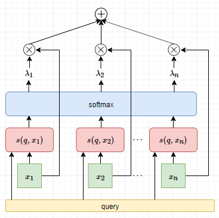
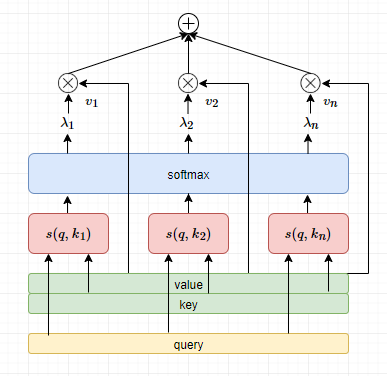

漫谈注意力机制（一）：人类的注意力和注意力机制基础
计划写一个系列，讲讲、漫谈Attention，本篇为第一篇，先讲讲人类的注意力和注意力机制基础，包括入门内容。
过去文章漫谈序列编码：MLP、CNN、RNN梳理了Attention前的序列编码方式及其优缺点，包括MLP、CNN、RNN。本文正式进入注意力机制Attention的大门，一种有别于过去模型的全新模型架构。
人类的注意力
在《超负荷的大脑》一书中提到人脑的工作记忆为 7±2，就是一次能处理的资讯的数量。人类每时每刻接受来着视觉、听觉等大量的信息，由于工作记忆的限制，并不能处理所有的信息，但是我们在具体的任务中，依然表现很好。这需要的就是注意力，在大量的信息中，寻找与任务相关的信息。
注意力一般分为两种：
显著性（saliency-based）注意力
聚焦式（focus）注意力
为了更好地理解人类的注意力与深度学习中的注意力机制，我们把这两种注意力展开了谈一谈。
显著性注意力
显著性注意力，自下而上的无意识的注意力，对信息的处理是被动的。这个被动体现在注意力获取信息上是无意识的、受外界刺激而驱动的、没有目的性的。例如我们走在路边，马路上传来汽车喇叭的声音，吸引我们注意汽车经过。
像 CNN 中的最大汇聚（Max Pooling）和门控机制（Gating），本质上是降采样过操作。它们的目的都是筛选最显著的信息（某个度量值最大），因此这类模型可以看做是显著性注意力的运用。
聚焦式注意力
聚焦式注意力，自上而下的有意识的注意力，对信息的处理是主动的、有选择的，因此也可以称为选择性注意力。这个主动性体现在注意力获取信息上是有目的性的、有意识的、被任务驱动的。例如我们要寻找视野中的苹果，聚焦式注意力能够帮助我们快速聚焦在苹果和苹果有关的特征上，进而快速找到苹果。再比如人类在做阅读理解时，一般都是带着问题去阅读去寻找答案，这个“带着问题阅读”的过程就体现了聚焦式注意力的主动性。
聚焦式注意力和显著性注意力的最大差别是获取信息的主动性上，前者获取信息是被动的，后者则是主动的。
根据上述的讨论，我们知道人类中的显著性注意力早就在深度学习中有所体现了。而聚焦式注意力正是本文需要展开的。
Attention机制的基本思路
假设有一向量序列 $\boldsymbol{X} = [\boldsymbol{x}_{1}, \dots, \boldsymbol{x}_{n}] \in \mathbb{R}^{n \times d}$，如一句子通过 Embedding 后的输出，其维度为(timesteps, features)。我们有一个和任务相关的向量，称为查询向量 $\boldsymbol{q}$，可以根据任务生成，也可以是可学习的参数（下一章我们谈可学习的情况），其具体的意义我们可以先不用关心。那么注意力机制要做的事情分三步：
- 查询向量 $\boldsymbol{q}$ 与每个 $\boldsymbol{x}_{i}$ 计算相关性 $\alpha_{i}$，相关性通过评分函数（也称为相关性函数）获得
- 使用softmax归一化相关性 $\alpha_{i}$，称为注意力分布
- 根据注意力分布计算向量序列的均值
假设我们有评分函数 $s$ 用于计算查询向量 $\boldsymbol{q}$ 与每个 $\boldsymbol{x}_{i}$ 的相关性，那么有
使用 softmax 函数进行归一化相关性，获得注意力分布，
我们可能会问，为什么归一化使用softmax方法，而不是其他方法呢？这个疑问我们等会解答。
加权平均，即注意力分布下的均值，
为更直观理解注意力机制，以阅读理解为例，向量序列为阅读材料，查询向量为问题，评分函数通过问题和阅读材料的相关性找出答案。
| 注意力机制 | 阅读理解任务 |
|---|---|
| 向量序列 | 阅读材料 |
| 查询向量 | 问题 |
| 注意力分布 | 阅读材料中答案有关的材料的分布 |
| 加权平均 | 根据阅读材料整合与答案相关的内容 |
阅读理解任务是典型的Seq2Seq问题或序列标注问题，借这个问题来类比思考Attention中相关的概念，以上的一一对应的。尽管不太严格，但是相当直观。
那么聚焦式注意力是如何设计到Attention机制中呢？所谓的聚焦式就是在庞大的信息集中，主动去关注需要的目标信息。这里的信息集指向量序列$\boldsymbol{X} = [\boldsymbol{x}_{1}, \dots, \boldsymbol{x}_{n}] \in \mathbb{R}^{n \times d}$。如何体现主动去关注需要的目标信息，就取决于查询向量$\boldsymbol{q}$。查询向量$\boldsymbol{q}$决定了哪些信息是模型需要主动去关注的。这个过程可以通过一个评分函数（也称为相关性函数）来量化，评估模型应该分配多大的权重去关注某个信息。
常见评分函数
查询向量 $\boldsymbol{q}$ 与每个 $\boldsymbol{x}_{i}$ 计算相关性 $\alpha_{i}$，相关性通过评分函数获得，目前常见的评分函数有若干个：加性模型、点积模型等等。
以下评分函数中的 $\boldsymbol{W}$，$\boldsymbol{U}$，$\boldsymbol{v}$ 都是网络中可以学习的参数。
加性模型
加性模型无法直接计算 $\boldsymbol{q}$ 和 $\boldsymbol{x}$ 的相关性。点积模型通过矩阵的乘法可以解决该问题，且提升计算效率。这个设计其实在LSTM里也有类似的体现，如LSTM的候选状态，
只不过里面添加了一个偏置项。这里$h_{t-1}$可以理解成是查询向量query。
减法模型
点积模型
点积模型有一个问题，当查询向量维度较高时，$s(\boldsymbol{x},\boldsymbol{q})$ 取值的方差较大（正比于维度），进而导致 softmax 函数的梯度较少（落入饱和区间），加大学习难度。点积缩放模型通过添加一个缩放因子可以解决这个问题。
点积缩放模型
为进一步提高泛化性能，可以引入双线性模型。
双线性模型
展开看，
双线性模型对 $\boldsymbol{q}$ 和 $\boldsymbol{x}$ 都进行线性变换。双线性模型引入更多的参数增加泛化性能，同时，由于在矩阵的形状变换下，不要求 $\boldsymbol{q}$ 和 $\boldsymbol{x}$ 有相同的维度。
总之，评分函数是可以根据自己对任务的理解自行设计，考虑如何与查询向量交互；考虑是否需要可学习的参数；考虑评分函数的值域，因为下一步要softmax归一化，要考虑后者的活性区间；考虑计算性能，梯度优良性等等。
一个具体的例子
以上我们列举了很多评分函数，这里以此为基础举一个例子。点积缩放模型$s(\boldsymbol{x},\boldsymbol{q}) = \frac{\boldsymbol{x}^{\top}\boldsymbol{q}}{\sqrt{d}}$的计算比较简单，我们以此为例子。
第一步，计算查询向量 $\boldsymbol{q}$ 与每个 $\boldsymbol{x}_{i}$ 的相关性，那么有
第二步，计算注意力分布，即归一化评分函数，
第三部，加权平均，
这就是基于点积缩放模型的Attention机制的三个步骤。获得的输出用作下游网络模型的输入以更进一步处理信息，例如输入到Dense网络中，然后做分类。
那么现在还有一个问题，如何构建查询向量？这个问题留作思考。
再谈查询向量
在注意力中，所谓的主动与被动的关键是，我们是否提前知道自己需要什么信息。知道自己需要什么信息体现在查询向量$\boldsymbol{q}$上。
经过不断的折腾，我们找到一个”标的”向量，如果一个向量和它越”相似”，那么这个向量对任务的贡献就更大。即，如果 $\boldsymbol{x}_{i}$ 和某个标的向量 $\boldsymbol{q}$ 越相似，它的重要性越高。至于为什么？经验罢了。现在于是，又要重新回去折腾 $s$ 这个函数。即用 $s(\boldsymbol{q}, \boldsymbol{x}_{i})$ 来表示 $\boldsymbol{x}_{i}$ 的重要性。于是，每个 $\boldsymbol{x}_{i}$ 的权重 $\lambda_{i}$ 计算如下，
那么，获得的注意力输出为，
这个过程就是查询向量参与下的Attention机制，直观看如下，

有了这个标的向量 $\boldsymbol{q}$ 对目标任务描述得越准确，模型性能进一步提升。
如果目标任务并不只有查询向量呢？而是一系列查询向量$\boldsymbol{q}_i, i = 1, 2, \dots, m$，那么Attention机制应该如何表示？其实就是多少个查询向量就重复以上多少次的Attention计算过程。
我们还是以点积缩放模型$s(\boldsymbol{x},\boldsymbol{q}) = \frac{\boldsymbol{x}^{\top}\boldsymbol{q}}{\sqrt{d}}$作为评分函数，假设有一向量序列 $\boldsymbol{X} = [\boldsymbol{x}_{1}, \dots, \boldsymbol{x}_{n}] \in \mathbb{R}^{n \times d}$，以及一系列查询向量$\boldsymbol{q}_i \in \mathbb{R}^{1 \times d}, i = 1, 2, \dots, m$，令$\boldsymbol{Q} = [\boldsymbol{q}_1, \dots, \boldsymbol{q}_m] \in \mathbb{R}^{m \times d}$。
使用$\alpha_{ij}$表示第$i$个查询向量$\boldsymbol{q}_i$对向量序列中第$j$个元素$\boldsymbol{x}_j$的评分值，那么可以构成矩阵$A = [a_{ij}]$，其每个元素为，
于是有，
可以知道，矩阵$A$的每一行表示一个固定的查询向量对向量序列中所有元素的评分值，因此对矩阵按行进行$\operatorname{softmax}(\boldsymbol{x})$归一化可以得到注意力分布矩阵，
因此，多查询向量下，Attention机制表示为，
由于查询向量的存在，对于$\boldsymbol{X}$的使用可以不再使用Pooling，而是根据下游需求构造查询向量$\boldsymbol{q}$，在再Attention下获得需要的信息，这在一定程度上缓解Pooling来说的信息容量有限的问题。例如在seq2seq中，第$i$步的解码时，构造查询向量$\boldsymbol{q}_i$（如decoder中RNN模型第$i$步的输出），解码输出需要关于$\boldsymbol{X}$的信息可以从Attention中获得，
然后这个$\boldsymbol{y}_i$再通过一定的处理后就可以送入$\operatorname{softmax}(\boldsymbol{y}_i)$，获得当前时间步解码的分布。Attention机制其实和时间序列建模很相似，在时间序列中，我们常常想知道某个时间步和其他时间步的相关性。
引入键值对结构
有时候向量序列$\boldsymbol{X} = \left [\boldsymbol{x}_{1},\boldsymbol{x}_{2},\cdots,\boldsymbol{x}_{k} \right]$不一定是这种形式，而是长键值对（key-value pair）结构，即
这种数据结构，在Attention中是期望使用$\boldsymbol{k}_i$与查询向量$\boldsymbol{q}$计算相关性并进行归一化，而加权平均则是使用$\boldsymbol{v}_i$，同时也起到记忆检索的作用。这个要求对注意力机制的计算影响不大，依旧可以分为三个步骤来完成：
- 查询向量 $\boldsymbol{q}$ 与每个 $\boldsymbol{k}_{i}$ 计算相关性 $\alpha_{i}$
- 使用softmax归一化相关性 $\alpha_{i}$，称为注意力分布
- 根据注意力分布计算向量序列$[\boldsymbol{v}_1, \dots, \boldsymbol{v}_n]$的均值
假设我们有评分函数 $s$ 用于计算查询向量 $\boldsymbol{q}$ 与每个 $\boldsymbol{k}_{i}$ 的相关性，那么有
使用 softmax 函数进行归一化相关性，获得注意力分布，
加权平均，即注意力分布下的均值，
直观的示意图如下，

为什么要引入键值对结构呢？其实是为了相关性计算与注意力加权平均的分离。这样的注意力模型更具普遍性。
类似上一节的推导，当查询向量为多个，评分函数为点积缩放模型的情况下，注意力机制可以紧凑第表示为，
其中softmax是对矩阵按行计算。
Attention解决seq2seq问题
在没有Attention之前，seq2seq问题通常是这样的，假设输入是$\boldsymbol{x} = [x_1, \dots, x_n]$，
encoder负责对输入序列$\boldsymbol{x} = [x_1, \dots, x_n]$编码成一个向量$\boldsymbol{h}$，理论上该向量包括了输入序列的主要信息。encoder通常是双向的RNN，如Bi-LSTM或者CNN+某种Pooling。decoder中，第$i$步的解码需要第$i-1$步的解码以及当前时刻的隐状态$s_i$和encoder获得的向量$\boldsymbol{h}$。decoder通常是单向的RNN。
这种encoder-decoder解码架构有一种问题：随着序列的变长，encoder无法把更多有效的信息融入到$\boldsymbol{h}$中，即encoder存在遗忘性，即便是双向的LSTM也无法解决这个问题。
而Attention的引入，可以解决这个问题，首先encoder不需要把输入序列编码成单个向量，毕竟单个向量存储信息的能力是有限的，
对于decoder来说，第$i$步的解码不再固定一个来自encoder的向量$\boldsymbol{h}$，而是根据Attention机制动态地构建。构建方式是以decoder第$i$步的隐状态$s_i$（或者$s_{i-1}$）作为查询向量在Attention下获取$\boldsymbol{H}$中对当前时刻解码有用的信息。
总结
本文从人类的显著性注意力、聚焦式注意力为开头，然后讲述以聚焦式注意力为原理的Attention机制的三个步骤~
什么情况下需要注意力机制？处理大量信息、需要聚焦大量信息中的特定信息、信息记忆有限。更多注意力机制的研究，比如稀疏注意力、位置问题、注意力的可解释性、结构化注意力。注意力机制的应用，如指针网络。比如，设想一个排序过程，输入 5, 168, 13，输出排序后的序列的索引，也就是 1, 3, 2。这就网络指针做的事情。此外，还有神经图灵机。
作为一个系列，下一篇会写软硬性注意力及其导出关系。
参考文献
[1] nndl.github.io
[2] Neural Machine Translation by Jointly Learning to Align and Translate
[3] A structured Self-Attentive Sentence Embedding
[4] Sparse Attentive Backtracking: Temporal Credit Assignment Through Reminding
转载请包括本文地址：https://allenwind.github.io/blog/9477
更多文章请参考：https://allenwind.github.io/blog/archives/